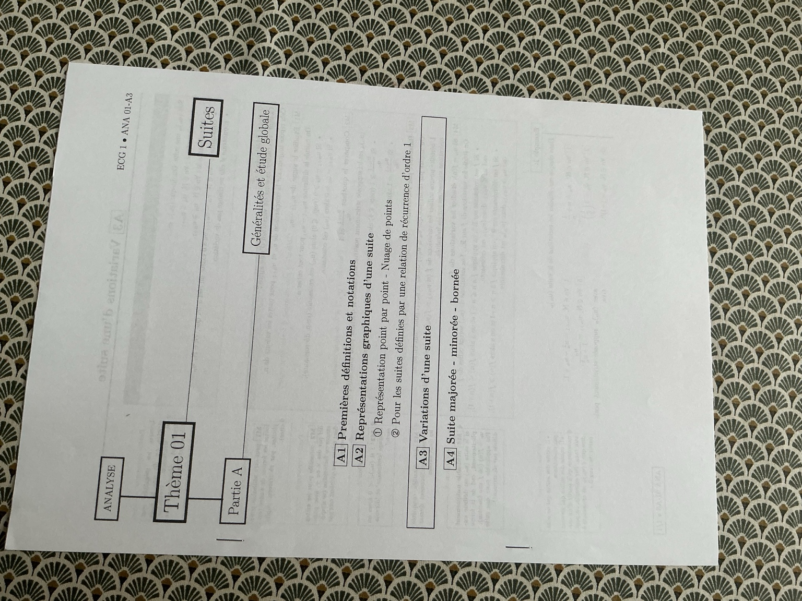
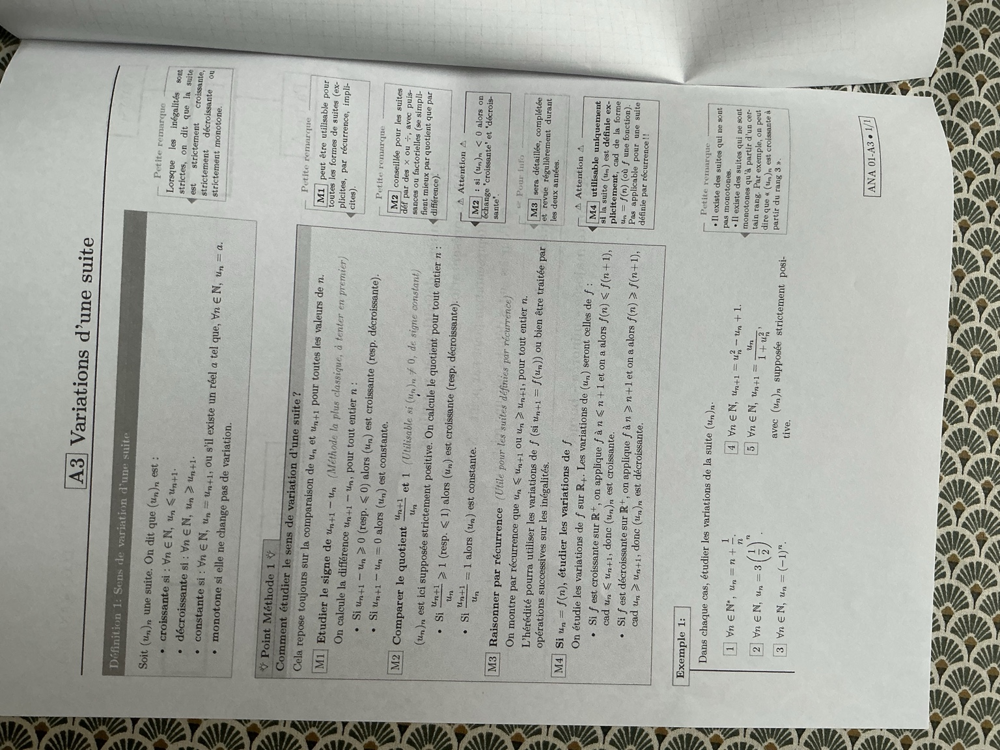

1 — Une suite définie sur ℕ*
Dans chaque cas, étudier les variations de la suite \((u_n)_n\).
\[\forall n\in\mathbb N^*,\qquad u_n=n+\frac1n.\]
Définir la monotonie, choisir une méthode et justifier chaque comparaison entre deux termes consécutifs. La fiche est retranscrite ci-dessous avec ses remarques, puis les cinq cas de l’exemple 1 sont corrigés pas à pas.
Les photos conservent intégralement la mise en page et les annotations du document.


Analyse · Thème 01 : Suites · Partie A : Généralités et étude globale.
Les parties A2 et A4 apparaissent uniquement dans le plan de cet envoi.
Soit \((u_n)_n\) une suite. On dit qu’elle est :
Lorsque les inégalités sont strictes, la suite est dite strictement croissante, strictement décroissante ou strictement monotone.
On compare le terme de rang \(n\), noté \(u_n\), au terme suivant, \(u_{n+1}\). L’inégalité doit être vraie à tous les rangs du domaine : si la suite commence à \(n=1\), on raisonne pour tout \(n\ge1\).
Une suite constante est à la fois croissante et décroissante au sens large. « Croissante » autorise certaines égalités ; « strictement croissante » exige \(u_{n+1}>u_n\) à chaque rang.
La comparaison porte toujours sur \(u_n\) et \(u_{n+1}\), pour toutes les valeurs admissibles de \(n\).
On calcule \(u_{n+1}-u_n\), pour tout entier \(n\).
Remarque : M1 peut être utilisée pour toutes les formes de suites : explicites, par récurrence, implicites…
Le polycopié indique que le quotient est utilisable lorsque les termes sont non nuls et de signe constant, puis donne les conclusions dans le cas strictement positif. On calcule \(q_n=\dfrac{u_{n+1}}{u_n}\), pour tout entier \(n\).
Remarque : M2 est conseillée pour les suites définies avec des produits ou des quotients, des puissances ou des factorielles, qui se simplifient mieux par quotient que par différence.
Attention du cours : si les termes changent de signe, M2 ne permet pas de conclure directement à une croissance ou à une décroissance.
Si \(u_n>0\), la différence a le même signe que \(q_n-1\). Si tous les \(u_n<0\), les conclusions s’inversent : \(q_n\le1\) donne une suite croissante et \(q_n\ge1\) une suite décroissante. Si un terme est nul, le quotient correspondant n’est pas défini : on utilise M1.
Utile pour les suites définies par récurrence : on montre par récurrence que \(u_n\le u_{n+1}\), ou \(u_n\ge u_{n+1}\), pour tout entier \(n\).
L’hérédité peut utiliser les variations de \(f\) si \(u_{n+1}=f(u_n)\), ou être traitée par des opérations successives sur les inégalités.
Remarque : M3 sera détaillée, complétée et revue régulièrement durant les deux années.
Supposons que \(u_{n+1}=f(u_n)\), que tous les termes appartiennent à un intervalle \(I\), que \(f\) soit croissante sur \(I\) et que \(u_0\le u_1\). On pose \(P(n):u_n\le u_{n+1}\).
Si le premier terme est \(u_1\), on initialise au rang 1. On doit aussi justifier que les termes restent dans \(I\), lorsque ce n’est pas déjà établi.
Si \(u_n=f(n)\), on étudie les variations de \(f\) sur \(\mathbb R_+\).
Attention du cours : M4 s’utilise uniquement lorsque le terme général est donné sous la forme explicite \(u_n=f(n)\). Elle ne s’applique pas directement à une relation \(u_{n+1}=f(u_n)\).
Si la suite commence au rang \(n_0\), il suffit d’étudier \(f\) sur \([n_0,+\infty[\). Pour une suite récurrente, la croissance de \(f\) seule ne fixe pas le sens de variation de la suite : par exemple, \(f(x)=x/2\) est croissante, mais \(u_{n+1}=u_n/2\) avec \(u_0>0\) définit une suite strictement décroissante.
Énoncés conservés. Les calculs et justifications qui suivent sont la correction ajoutée.
Dans chaque cas, étudier les variations de la suite \((u_n)_n\).
1. Écrire le terme suivant. On remplace chaque \(n\) par \(n+1\) :
2. Calculer la différence. Pour tout \(n\ge1\) :
3. Déterminer le signe. Comme \(n\ge1\), on a \(n(n+1)\ge2\), donc :
Conclusion : la suite est strictement croissante à partir du rang 1.
Attention à la notation : \(u_{n+1}\) désigne le terme suivant ; ce n’est pas \(u_n+1\). Ici, \(u_0\) n’est pas défini.
1. Vérifier la positivité. Pour tout \(n\), \(3(1/2)^n>0\). Le quotient est donc utilisable avec les conclusions habituelles.
2. Simplifier le quotient.
Conclusion : la suite est strictement décroissante sur ℕ. À chaque étape, on divise un terme positif par 2.
On peut aussi appliquer M1 : \(u_{n+1}-u_n=\frac12u_n-u_n=-\frac12u_n<0\).
Conclusion : la suite n’est pas monotone.
Le calcul général confirme l’alternance :
La différence est négative pour \(n\) pair et positive pour \(n\) impair. Le quotient vaut bien \(-1\), mais les termes changent de signe : comparer ce quotient à 1 ne prouve pas une décroissance.
Quelques valeurs ne prouvent pas une monotonie à tous les rangs ; en revanche, un contre-exemple suffit à réfuter une inégalité universelle.
Le polycopié ne donne pas de valeur initiale pour ce cas.
On utilise la relation donnée pour remplacer \(u_{n+1}\), puis on soustrait \(u_n\) :
Un carré est toujours positif ou nul.
Conclusion : pour toute valeur initiale réelle, la suite définie par cette relation est croissante au sens large.
On ne peut pas affirmer une croissance stricte pour toutes les valeurs initiales : si \(u_0=1\), alors \(u_1=1\), puis tous les termes valent 1.
En effet, pour tout \(n\),
En partant de \(u_0\ne0\) et \(u_0\ne1\), ces deux égalités montrent par récurrence que les termes suivants ne valent jamais 0 ni 1. Alors \((u_n-1)^2>0\) à chaque rang.
avec \((u_n)_n\) supposée strictement positive.
1. Utiliser l’hypothèse. Comme \(u_n>0\), on a \(u_n^2>0\), donc \(1+u_n^2>1\).
2. Comparer le quotient à 1.
Le dénominateur est strictement supérieur à 1 :
Conclusion : la suite est strictement décroissante.
Autre rédaction, par différence :
Si l’on part d’un terme initial \(u_0>0\), la relation conserve la positivité : un numérateur positif divisé par un dénominateur positif donne un terme suivant positif. Cela se justifie par récurrence.
| Cas du polycopié | Calcul décisif | Conclusion |
|---|---|---|
| 1 · \(n+1/n\), \(n\ge1\) | \(u_{n+1}-u_n\ge1/2>0\) | Strictement croissante |
| 2 · \(3(1/2)^n\) | \(u_n>0\), quotient \(=1/2\) | Strictement décroissante |
| 3 · \((-1)^n\) | \(u_1<u_0\) et \(u_2>u_1\) | Non monotone |
| 4 · \(u_{n+1}=u_n^2-u_n+1\) | \(u_{n+1}-u_n=(u_n-1)^2\ge0\) | Croissante ; stricte si \(u_0\notin\{0,1\}\) |
| 5 · \(u_{n+1}=u_n/(1+u_n^2)\), \(u_n>0\) | \(0<u_{n+1}/u_n<1\) | Strictement décroissante |
Retrouver ces méthodes dans le chapitre 6 · Revoir les notations de A1 · Tous les cours prépa de maths.